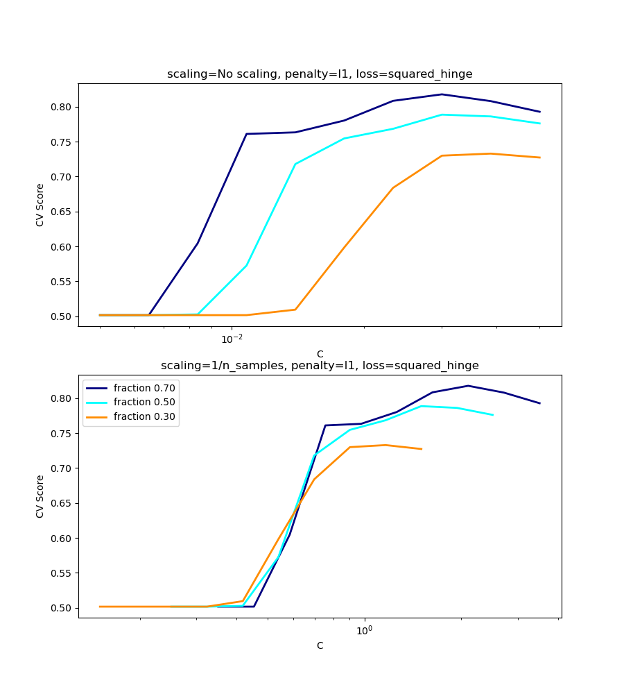
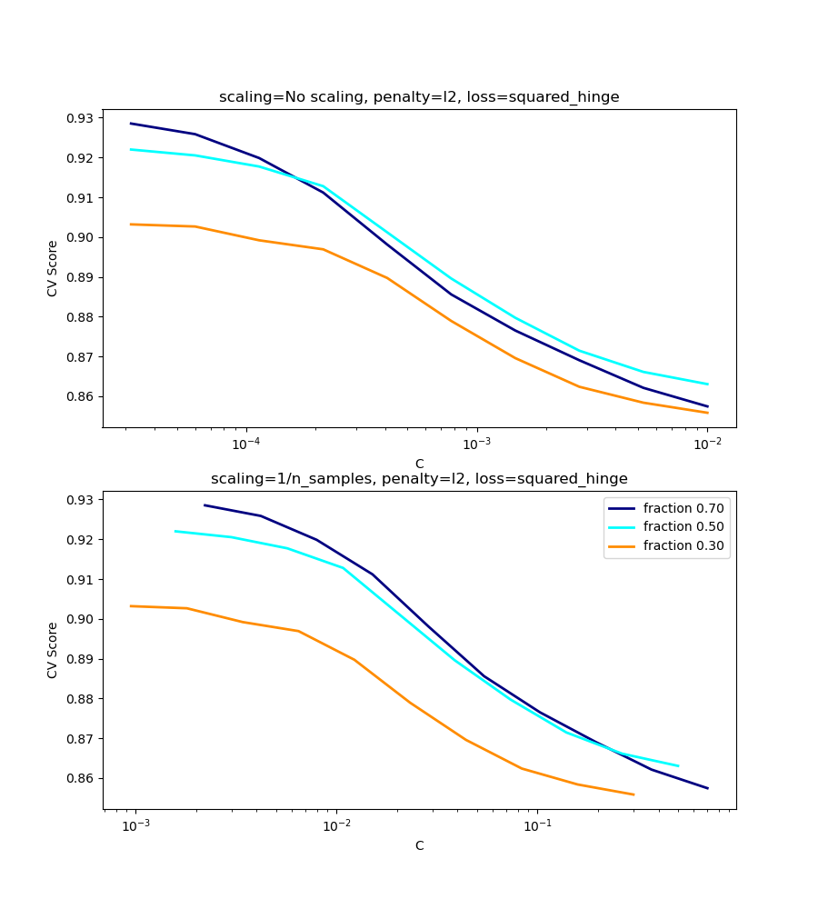

Nota
Haz clic aquí para descargar el código de ejemplo completo o para ejecutar este ejemplo en tu navegador a través de Binder
Escala del parámetro de regularización para las SVC¶
El siguiente ejemplo ilustra el efecto de escalar el parámetro de regularización cuando se utiliza Máquinas de Vectores de Soporte para clasificación. Para la clasificación SVC, estamos interesados en una minimización del riesgo para la ecuación:
donde
\(C\) se utiliza para establecer la cantidad de regularización
\(\mathcal{L}\) es una función
lossde nuestras muestras y nuestros parámetros del modelo.\(\Omega\) es una función
penaltyde nuestros parámetros del modelo
Si consideramos que la función de pérdida es el error individual por muestra, entonces el término de ajuste de datos, o la suma del error de cada muestra, aumentará a medida que añadamos más muestras. El término de penalización, sin embargo, no aumentará.
Cuando se utiliza, por ejemplo, validación cruzada, para establecer la cantidad de regularización con C, habrá una cantidad diferente de muestras entre el problema principal y los problemas más pequeños dentro de los pliegues de la validación cruzada.
Dado que nuestra función de pérdida depende de la cantidad de muestras, ésta influirá en el valor seleccionado de C. La pregunta que surge es ¿Cómo ajustamos C de forma óptima para tener en cuenta la diferente cantidad de muestras de entrenamiento?
Las figuras siguientes sirven para ilustrar el efecto de escalar nuestro C para compensar el cambio en el número de muestras, en el caso de utilizar una penalización l1, así como la penalización l2.
l1-caso de penalización¶
En el caso de l1, la teoría dice que la consistencia de la predicción (es decir, que bajo una hipótesis dada, el estimador aprendido predice tan bien como un modelo que conoce la verdadera distribución) no es posible debido al sesgo de l1. Sin embargo, sí dice que la consistencia del modelo, en términos de encontrar el conjunto correcto de parámetros no nulos, así como sus signos, puede lograrse escalando C1.
l2-caso de penalización¶
La teoría dice que para alcanzar la consistencia de las predicciones, el parámetro de penalización debe mantenerse constante a medida que el número de muestras crece.
Simulaciones¶
Las dos figuras a continuación grafican los valores de C en el eje x y las correspondientes notas de validación cruzada en el eje y, para varias fracciones diferentes de un conjunto de datos generados.
En el caso de la penalización l1, el error de validación cruzada se correlaciona mejor con el error de prueba, al escalar nuestro C con el número de muestras, n, lo que puede verse en la primera figura.
Para el caso de penalización l2, el mejor resultado viene del caso donde C no es escalado.
Nota:
Se utilizan dos conjuntos de datos separados para las dos gráficas diferentes. La razón detrás de esto es el caso l1 funciona mejor en datos dispersos, mientras que l2 es más adecuado para el caso no disperso.
- 
- 
print(__doc__)
# Author: Andreas Mueller <amueller@ais.uni-bonn.de>
# Jaques Grobler <jaques.grobler@inria.fr>
# License: BSD 3 clause
import numpy as np
import matplotlib.pyplot as plt
from sklearn.svm import LinearSVC
from sklearn.model_selection import ShuffleSplit
from sklearn.model_selection import GridSearchCV
from sklearn.utils import check_random_state
from sklearn import datasets
rnd = check_random_state(1)
# set up dataset
n_samples = 100
n_features = 300
# l1 data (only 5 informative features)
X_1, y_1 = datasets.make_classification(n_samples=n_samples,
n_features=n_features, n_informative=5,
random_state=1)
# l2 data: non sparse, but less features
y_2 = np.sign(.5 - rnd.rand(n_samples))
X_2 = rnd.randn(n_samples, n_features // 5) + y_2[:, np.newaxis]
X_2 += 5 * rnd.randn(n_samples, n_features // 5)
clf_sets = [(LinearSVC(penalty='l1', loss='squared_hinge', dual=False,
tol=1e-3),
np.logspace(-2.3, -1.3, 10), X_1, y_1),
(LinearSVC(penalty='l2', loss='squared_hinge', dual=True),
np.logspace(-4.5, -2, 10), X_2, y_2)]
colors = ['navy', 'cyan', 'darkorange']
lw = 2
for clf, cs, X, y in clf_sets:
# set up the plot for each regressor
fig, axes = plt.subplots(nrows=2, sharey=True, figsize=(9, 10))
for k, train_size in enumerate(np.linspace(0.3, 0.7, 3)[::-1]):
param_grid = dict(C=cs)
# To get nice curve, we need a large number of iterations to
# reduce the variance
grid = GridSearchCV(clf, refit=False, param_grid=param_grid,
cv=ShuffleSplit(train_size=train_size,
test_size=.3,
n_splits=250, random_state=1))
grid.fit(X, y)
scores = grid.cv_results_['mean_test_score']
scales = [(1, 'No scaling'),
((n_samples * train_size), '1/n_samples'),
]
for ax, (scaler, name) in zip(axes, scales):
ax.set_xlabel('C')
ax.set_ylabel('CV Score')
grid_cs = cs * float(scaler) # scale the C's
ax.semilogx(grid_cs, scores, label="fraction %.2f" %
train_size, color=colors[k], lw=lw)
ax.set_title('scaling=%s, penalty=%s, loss=%s' %
(name, clf.penalty, clf.loss))
plt.legend(loc="best")
plt.show()
Tiempo total de ejecución del script: (0 minutos 25.012 segundos)